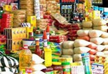

بعض خدمات المواطنين
دورة استخراج بطاقة تموينية ذكية جديدة
دورة استخراج بدل فاقد للبطاقة الذكية
.jpg)
التقديم على مخبز تموينى

التقديم على منفذ تموينى
-
(دورة استخراج بطاقة تموينية ذكية جديدة للأسر الغير مقيدة تموينيا بعد الاعتماد من الوزارة) :
- يتقدم المواطن لمكتب التموين التابع له بتحرير النموذج الخاص باستخراج بطاقة جديدة طبقا للقرار 84 لسنة 2009 مرفق به المستندات الآتية:
- - صور بطاقة الرقم القومي لرب الأسرة والزوجة
- - صور بطاقات أو صور شهادات ميلاد الرقم القومي للمستفيدين
- - المستند الدال على استحقاق صاحب الطلب للبطاقة التموينية طبقا للقرار الوزاري رقم 84 لسنة 2009
- · يقوم مكتب التموين بفحص المستندات والدخول على النظام للتأكد من عدم وجود بطاقة تموينية للمواطن أو أحد المستفيدين وذلك لضمان عدم إصدار اى بطاقات مكررة .
- · يقوم مكتب التموين بإرسال النموذج بعد الاعتماد إلى مركز الخدمة وتسليمه من خلال سركي تسليمات.
- · يقوم مركز الخدمة بإدخال بيانات البطاقة التموينية جديدة للمواطن على النظام بناء على البيانات المدرجة فى استمارة الخدمة المعتمدة من مكتب التموين و المديرية.
- · تقوم الشركة المنفذة بطباعة البطاقة الذكية وبطاقة الرقم السري خلال أسبوعين وإرسال البطاقة الذكية إلى مكتب التموين مرفقا بها تقرير مفصل به جميع بيانات البطاقة وكافة المستندات و يتم كذلك إرسال بطاقة الرقم السري إلى مركز الخدمة.
- · يقوم المواطن باستلام البطاقة الجديدة من مكتب التموين بعد التأكد من جميع بياناته من التقرير المفصل الذي يحتوي على ( اسم صاحب البطاقة / الرقم القومي / عدد المستفيدين/ تاريخ الاستلام بعد التوقيع / اسم البدال التمويني).
- · يتوجه المواطن إلى مركز الخدمة لاستلام الرقم السري الخاص بالبطاقة الجديدة وذلك بعد اطلاع الموظف المختص على البطاقة الذكية و إثبات الشخصية للمستلم .
- · يقوم المواطن بصرف المقررات التموينية بالبطاقة الذكية الجديدة اعتبار من الشهر التالي لاستلامها.
-
(دورة التعامل مع سرقة / تلف/ فقد البطاقات الخاصة بالمواطن) :
- · يقوم المواطن في حالة سرقه البطاقة التموينية أو فقدها بالاتصال الفوري بمركز خدمة العملاء على رقم 19765 أو الإبلاغ بمركز الخدمة حتى يتم الوقف الفوري لها .
- · يقوم مركز خدمة العملاء الخاص بالشركة المنفذة بتسجيل طلب المواطن في نموذج خاص باستقبال طلبات ، مكالمات خدمة العملاء مع تنفيذ الوقف الفوري للبطاقة .
- · تقوم الشركة المنفذة بوقف عمل البطاقة ويتم إبلاغ المواطن بأنه سيتم وقف البطاقة مؤقتا لمدة ثلاث أيام عمل رسمية.
- · يقوم المواطن بتحرير طلب رسمي في مكتب التموين التابع له لعمل بطاقة جديدة وإلغاء التعامل مع البطاقة القديمة نهائيا ولكن في حالة عدم تقديم صورة الطلب خلال الثلاث أيام يتم أعادة تشغيل البطاقة تلقائيا.
- · تقوم الشركة المنفذة بتسليم البطاقة الجديدة إلى مكتب التموين مرفق بها تقرير مفصل موضح به البيانات الخاصة للبطاقة الحديثة.
- · يقوم مكتب التموين بمراجعة البيانات التي تم تعديلها (محتوى نموذج الخدمة) مع البيانات المدرجة بقاعدة البيانات والتأكد من إجراء التعديلات.
- · يقوم مكتب التموين بتسليم المواطن البطاقة الجديدة بعد توقيعه على التقرير المفصل الذي يحتوى على اسم صاحب البطاقة / الرقم القومي لصاحب البطاقة / عدد المستفيدين / تاريخ الاستلام / اسم البدال.
- · يقوم المواطن باستلام الرقم السري الخاص بالبطاقة الجديدة من مركز الخدمة .
- · يقوم المواطن بصرف المقررات التموينية من البدال الشهر التالي لإصدار البطاقة .
-
مراعاة الضوابط التالية للموافقة على انشاء المخابز بأنواعها .
- 1- تكون الاولوية للمناطق والمجتمعات العمرانية الجديدة التى لا توجد بها مخابز بلدية قائمة تفى بحاجة السكان
- 2- عدم الموافقة على انشاء مخابز بلدية جديدة بالقرب من المخابز التى تنتج الخبز الافرنجى أو السياحى أو الحلوى من العجين
-
الاشتراطات الواجب توافرها فى التراخيص للمخابز البلدية دقيق 82% الجديدة .
- 1- مساحة المخبز لا تقل عن 65 م .
- 2- ارتفاع المخبز لاتقل عن 4 م ويكون بالخرسانة المسلحة والحوائط جميعها مغطاة بالقيشانى .
- 3- مصدر المياة والكهرباء عمومى مع وجود صرف صحى.
- 4-جدران المعجن بالقيشانى وارضية المعجن مبلطة مع وجود منافذ مغطاة بالسلك ووجود صنبور مياه خاص بالعجين واخر للمياة الساخنة وان يتم العجن اليا فى حلة مصنوعه من مادة غير قابلة للصدا.
- 5- دورة المياة والمغاسل مناسبة وبعيدة عن المعجن وصالة الخبز ومكان مستقل للدقيق.
- 6-عدم تعرض الخبز للهب المباشر عند الخبز وعلى أن يكون الوقود المستخدم السولار أو الغاز الطبيعى مع توافر ولاعة سولارية أو غازية لتقليل نسبة عادم الغاز للنسب المسموح بها مع مراعاة قوانين البينة ويحظر استخدام المازوت تماما .
- 7- الفرن نصف آلى حسب المواصفات المعتمدة ومعزول حراريا .
- 8- تزويد تغذية الوقود بمحابيس بعيدة عن الغاز لتلافى اخطار الحريق .
- 9- لابد ان تكون المدخنة اعلى العقار والعقارات المجاورة على أن يركب بنهايتها ( طنبوشة )
- 10- سعة خزان السولار الارضى لايقل عن 2 طن بعيدا عن بيت النار بحسب قدرة الفرن بخلاف خزان لبيت النار .
- 11- وجود مناشر كافية لتهوية الخبز المنتج .
- 12- ان يكون المخبز مزود باجهزة اطفاء الحريق مع مرعاة قواعد الامن الصناعى
- 13- الاحتفاظ بميزان حساس بالمخبز .
- 14- وجود منفذ لبيع الخبز المنتج وبة فترينة عرض الخبز وارفف للتهوية ومضاء بالكهرباء .
-
شروط اعتماد تاجر تموينى مستجد :
- - أن يمتلك محل تجارى مرخص ويتوافر فيه الشروط الصحية المناسبة بمساحه لأتقل عن 30 متر ومجهز به ثلاجة عرض مع توفير مخزن للمحل
- - سجل تجارى دون شرط مرور عام على قيده
- - إن يكون كامل الأهلية ولا يعمل بالحكومة أو قطاع الإعمال العام
- - أن يكون حسن السمعة ولم يسبق الحكم عليه فى إحدى الجرائم التموينية أو المخلة بالشرف والامانه
- - وجود بطاقة ضريبية وشهادة صحية وصحيفة الحالة الجنائية
- - أن يتقدم بكشوف ترغيب أي عدد من البطاقات التموينية طبقا لحاجة المنطقة لهذا النشاط
- - يتم تقديم إقرار وتعهد بأنه على استعداد لشراء ماكينة الصرف وإجراء الصيانة اللازمة على حسابه الخاص